HTML significa Hyper Text Markup Lenguage (lenguaje marcado de hipertexto), a diferencia de otros programas HTML no es un lenguaje de programación como Javascript, no tiene lógica, no toma decisiones, no calcula nada.
Es un lenguaje que describe la estructura y el significado de un contenido, le dice al navegador "esto es un título", "esto es una lista", "esto es un formulario", nada más.
Hypertext: texto que puede "saltar" a otro lugar mediante enlaces (a href="#")
HTML es como el esqueleto de una casa, define dónde están las paredes, dónde la puerta, dónde las ventanas, pero no pinta nada no decide qué tan cómodos son los sillones, eso lo hará CSS (el aspecto visual), y Javascript (el comportamiento de la lógica).

Semántica
parte lógica y en orden para un navegador web
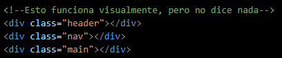
El problema de usar solo div para todo es que es una caja genérica, sin ningún significado, literalmente "división". El navegador, un buscador o un lector de pantalla no tienen forma de saber qué es cada div sin leer el nombre de la clase
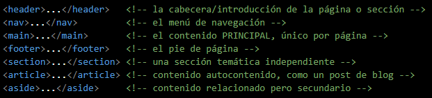
La diferencia no es visual, es de significado explícito, reconocido universalmente por navegadores, buscadores y tecnología de accesibilidad, sin depender de que tú le hayas puesto nombre de clase razonable
El main solo se repite una vez por página y dentro de el puede ir tanto section como div
Strong vs b
ambas etiquetas hacen que el texto se vea en negrita por defecto, pero significan cosas distintas:
strong: signfica esto tiene importancia real, es relevante para el sentido del texto siendo semantico.
b:significa quiero que esto se vea en negrita sin ninguna razón de importancia
Estructura basica de HTML
Todo archivo HTMl sigue una estructura basica, que son;
- !DOCTYPE html
- html lang="es"
- head
- meta charset="UTF-8"
- meta name="viewport"
- Content="widht=device-width, initial-scale=1.0"
- title
- body
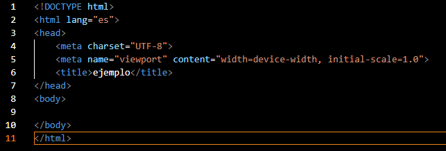
!DOCTYPE html: Le dice al navegador "este documento sigue las reglas de HTM5 (la versión moderna), sin esto algunos navegadores pueden interpretar tu página en un modo raro de compatibilidad antigua"
html lang="es": La etiqueta de raíz que envuelve todo el documento, el atributo lang="es" le dice al navegador (y al lector de pantalla), que el contenido esta en español, esto afecta cosas como correción ortografico automático y pronunciación en lectores de pantalla.
Head: Contiene la información sobre la página, que el usuario no ve directamente en el cuerpo (metadatos, título de pestala, enlaces a CSS).
meta charset="UTF-8": Le dice al navegador qué codificación de caracteres usar, sin esto, letras con tilde o simbolos como holi podrian verse como caracteres raros.
meta name="viewport", content="width=device-width, initial-scale=1.0": Configura cómo se comporta la página en dispositivos móviles, sin esto tu página se vería zoomeada o mal escalada en un celular.
Title: El texto que aparece en la pestaña del navegador y en resultados de google.
body: Aquí va todo lo que el usuario ve e interactúa, texto imagenes, formularios y botones.
Etiquetas y atributos
Sintaxis base, esta es la parte de "gramática" de HTML, su estructura basica es;
- -p- class="ejercicio", id="ejercicio1"-este es un parrafo-/p-
| Pieza | Nombre técnico | Qué es? |
|---|---|---|
| -p- | Etiqueta de apertura | Marca el inicio del elemento |
| -/p- | Etiqueta de cierre | Marca el final |
| class="ejercicio" | Atributo | Información extra sobre el elemento |
| id="ejercicio1" | Atributo | Otra información extra distinta que se utiliza en Jacascript |
| todo junto | Elemento | La etiqueta de apertura + contenido + etiqueta de cierre |
Reglas importantes de la Sintaxis
- Casi todas las etiquetas vienen en pares (apertura y cierre), pero hay excepciones, etiquetas que no tienen contenido dentro, por lo tanto no necesitan cierre.
Estas se llaman etiquetas de un solo elemento (self-closing/void elements). - Los atributos van dentro de la etiqueta de apertura, con la forma nombre="valor" (con comillas), un elemento puede tener varios atributos: type, id y min son los tres atributos distintos, todos dentro de la misma etiqueta input.
- El anidamiento debe respetar el orden de cierre, como cajas dentro de cajas, la ultima que abres debe ser la primera que cierras.
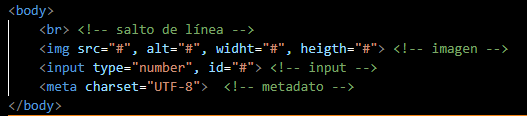
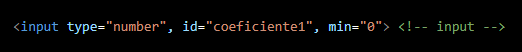
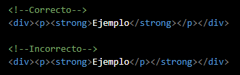
Texto y Estructura de Contenido
Veremos las etiquetas más comunes para ogranizar contenido de texto,y ver cuando se usa cada una con criterio no por costumbre.
Encabezados
Van de "h1 a h6", la regla de oro es representan una jerarquía real de importancia como el índice de un libro, no lo uses solo porque "quiero letra más grande", es saltarse niveles sin razón por ejemplo pasar de h1 a h4 sin h2 ni h3 en medio rompe la jerarquía lógica del documento
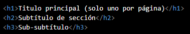
Párrafos y saltos de línea
-p- crea un bloque nuevo y en cambio -br- solo "empuja" el texto a la siguiente línea, dentro del mismo bloque, no crea separación real, también -hr- crea una linea separadora horizontal.
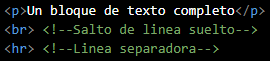
Listas
Hay dos tipos de listas las ordenadas y desordenadas
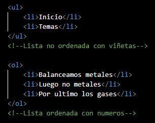
Texto en Línea con Significado
Darle apariencia a un texto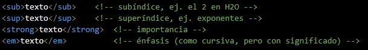
Enlaces e Imágenes
Enlaces
el href es el que dice a dónde va el enlace puede ser:
- href="ejemplo.html"(archivo de tu mismo sitio, ruta relativa)
- href="https://www.youtube.com"(una página externa, ruta absoluta)
- href="#seccion2"(ancla)
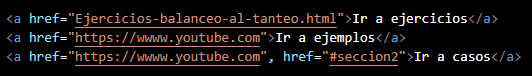
Imágenes
contiene los atributos src (SOuRCe), de donde sale al imágen, alt (texto alternativo), se muestra si la imágen no carga, para describir la imagen para que alguien que no vea pueda leerla, pueden estar tanto en archivo de tu mismo sitio, como también de ruta absoluta.

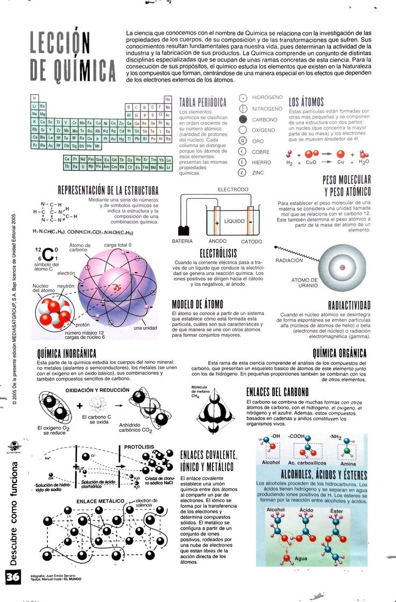
Tipos de input
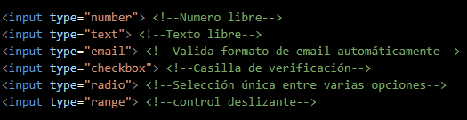
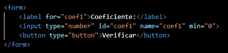
Lista Desplegable
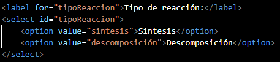
Atributo de validación nativa de HTML
El atributo required le dice al navegador no dejar enviar el formulario si está vacacío, mientras que los min/max son límites númericos, esto es validación básica, del lado del navegador, no reemplaza la validación que ya haces con javascript, pero es una primera capa útil.
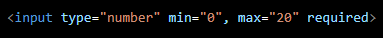